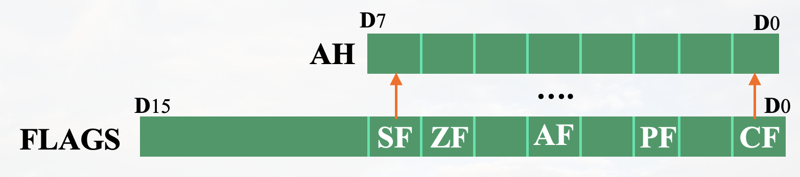
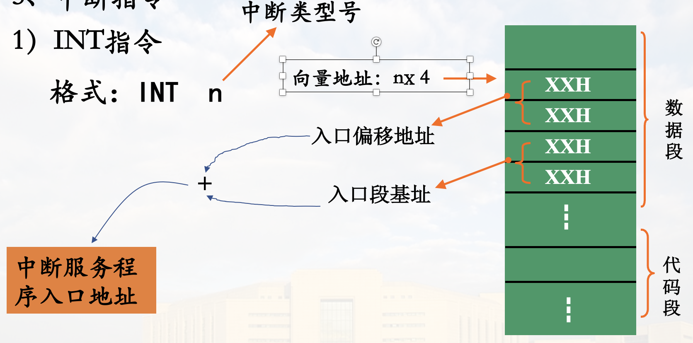

指令系统
常用符号说明
| 符号 | 说明 |
|---|---|
| OPRD | 泛指操作数 |
| REG | 寄存器操作数 |
| mem | 存储器操作数 |
| acc | 累加器(AX AL)操作数 |
| dest | 目标操作数 |
| src | 源操作数 |
| disp | 8/16位偏移量, 可以是符号地址 |
| DATA | 8/16位立即数 |
| PORT | 输入输出端口号 |
| [ ] | 存储器操作数, 括号内为偏移地址 |
一. 数据传输指令
1. 通用数据传送
特点: 该类指令的执行对标识位不产生影响
1) 一般数据传送指令
格式: MOV dest src
操作: src dest
执行后src不变
举例:
MOV AL, BL
MOV AX, 1278H
MOV [BX], AX
注意事项:
- 两操作数长度必须相同
- 存储单元之间不能直接传送(可以分成两条, 用一个寄存器过渡)
- 段寄存器CS和指令指针IP一般不直接通过MOV指令修改，但可作源操作数
- 立即数不能直接传送给段寄存器
- 两个段寄存器之间不能直接传送
- 不影响标志位

第三个判断: BX与BP不兼容, 应为
第五项:09H0009H
MOV应用例
将符号 "*" 的ASCII码 2AH送入内存数据段 1010H 开始的100个单元中

程序段:
MOV DI, 1010H ; 变址寄存器初始化
MOV CX, 100 ; 计数器初值
MOV AL, '*'
AGAIN: MOV [DI], AL ; 一字节传送
INC DI ; 修改地址指针(+1)
DEC CX ; 修改计数器(-1)
JNZ AGAIN ; ZF!=0则继续传送
HLT

2) 堆栈操作指令
堆栈操作类型: 入栈(压栈)、出栈
在活动段(栈顶)进行, 先进后出
以字为单位, 操作数必须位16位
压栈指令 PUSH
格式: PUSH OPRD (OPRD: 16位寄存器或存储器字单元)
指令执行过程:

SP - 2SP- 操作数高字节
(SP + 1) - 操作数低字节
(SP)
操作示例:

出栈指令 POP
格式: POP OPRD
指令执行过程:
(SP)操作数低字节 弹出(SP + 1)操作数高字节 弹出SP + 2SP

堆栈操作指令说明
- 操作数必须是16位
- 操作数不能是立即数
- 出栈指令操作数不能是CS
- PUSH 与 POP 指令一般成对使用
- PUSH指令的操作方向是从高地址向低地址，而POP指令操作是从低地址向高地址
例题
说明程序段功能
MOV AX，1234H
MOV SP，AX
MOV BX，5678H
PUSH AX
PUSH BX
POP AX
POP BX

交换AX、BX
非栈顶单元的访问
要想访问非栈顶单元, 可以使用MOV
BP默认在SS(堆栈段)
3) 交换指令
格式: XCHG REG/MEM MEM/REG
说明:
- 两操作数必须有一个是寄存器操作数
- 不能使用段寄存器
使用例:
XCHG AX，BX
XCHG [2000]，CL
4) 查表转换指令
格式: XLAT
说明:
- 零操作数, 隐含寻址, 隐含操作数为
BX AL BX: 表格首地址AL: 要查找元素序号(0, 1, 2, ...), 即<font color=>表内位移量
操作:
((BX) + (AL)) AL
XLAT 指令为字节传送
查表指令例

查表指令实现:
MOV BX, 2000H ;BX <- 表首地址
MOV AL, 0BH ;AL <- 序号(表内偏移)
XLAT ;查表转换
执行后 AL = 42H
传送指令实现:
MOV BX, 0BH
MOV AL, [BX+2000H]
5) 字位扩展指令
将有符号数的符号位扩展到高位
CBW：字节->字CWD：字->双字
指令为零操作数指令，采用隐含寻址，隐含的操作数为AX或AX:DX
CBW
将AL的符号位扩展到AH
- 若
AL最高位=1，则执行后AH=FFH - 若
AL最高位=0，则执行后AH=00H
CWD
将AX符号位扩展到DX
- 若
AX最高位=1，则执行后DX=FFFFH - 若
AX最高位=0，则执行后DX=0000H
例
给出以下指令执行结果
MOV AL，44H
CBW
; AX = 0044H
MOV AX，0AFDEH
CWD
; DX = FFFFH
MOV AL，86H
CBW
; AX = FF86H
多用于除法指令(被除数、除数、商的宽度不同)
2. 输入输出指令
专用I/O指令，面向I/O端口操作
指令格式
输入指令: IN acc, PORT
输出指令: OUT PORT, acc
PORT 为端口地址, acc 为累加器 AX或AL
注意acc的限定
IO 寻址方式(PORT表示方式)
直接寻址
端口地址为8位时，指令中直接给出8位端口地址
可寻址 255 个端口
间接寻址
端口地址为16位时，指令中的端口地址必须由DX指定
可寻址 64K 个端口
IO指令例
IN AX，80H ; 80H 为端口号, (80H) -> AX
OUT 35H，AX ; 35H 为端口号, AX -> (35H)
MOV DX，2400H
IN AL，DX ; 2400H 为端口号, (DX) -> AL
注意端口号的表示与通用数据传送指令里间接寻址的不同
注意点
只有累加器(AX/AL)可用于与端口间传送数据
端口间接寻址只能用DX
与传送类指令寻址方式的区别
3. 地址传送指令
用于获取存储器操作数的段基址和段内偏移地址
1) 取偏移地址指令 LEA
EA: 有效地址, L: Load
格式: LEA REG MEM (MEM 为存储器操作数)
操作: 将存储器操作数MEM的16位偏移地址送REG
程序中用于获取符号地址的偏移地址
源操作数必须是一个存储器操作数，目标操作数必须是16位通用寄存器，通常是间址寄存器
高级语言例
int arr = int[] {1, 2, 3}; int* p = /* -> */ &arr; // <- 对应 LEA
LEA 应用例
--- 例一 ---
若DS=093AH，比较指令 MOV BX,[23H] 与 LEA BX,[23H] 执行后BX结果

MOV 将字单元的内容送到 BX, LEA 将字单元的段内偏移地址送到 BX
--- 例二 ---
看PPT动画吧(Part3 第三章 指令系统(二) 幻灯片34)
--- 例三 ---
将数据段中首地址为MEM1的50个字节的数据传送到同一逻辑段首地址为MEM2的区域存放，编写相应的程序段

LEA SI, MEM1
LEA DI, MEM2
MOV CL, 50
NEXT: MOV AL, [SI]
MOV [DI], AL
INC SI
INC DI
DEC CL
JNZ NEXT
HLT
2) 装入地址指针指令 LDS 和 LES
DS ES:段寄存器
格式: LDS DEST, SRC LES DEST, SRC
SRC: 存储器操作数
DEST: 16位通用寄存器
把SRC开始的4字节内容分别送入通用寄存器DEST和段寄存器DS(LDS指令)或ES(LES指令)
低字单元内容为偏移量送DEST，高字单元内容为段基址送DS或ES
LDS 示例

SI:0020H
DS:5030H
4. 标志位操作指令
1) LAHF SAHF
隐含操作数AH和FLAGS
LAHF: Load AH Flags, 将FLAGS的底8位装入AH

SAHF: Save AH Flags, 将AH内容送FLAGS低8位
2) PUSHF POPF
针对FLAGS的堆栈操作指令
-
PUSHF：将标志寄存器FLAGS压栈 -
POPF：将当前栈顶的两字节内容弹出送FLAGS
传送指令小结

二. 算数运算指令
算术运算指令的执行大多对状态标志位会产生影响
1. 加法运算指令
加法指令对操作数的要求与MOV指令相同
1) 普通加法指令 ADD
格式: ADD OPRD1, OPRD2
功能: OPRD1 + OPRD2 -> OPRD1
ADD指令的执行对全部6个状态标志位都产生影响
ADD 指令例
MOV AL，78H
ADD AL，99H

2) 带进位的加法指令 ADC
格式: ADC OPRD1, OPRD2
对操作数的要求和ADD完全一样
功能: OPRD1 + OPRD2 + CF -> OPRD1
CF是指令执行前的值
ADC指令常用于多字节数相加，使用前要先将CF清零(指多字节相加前)
ADC 指令应用
例: 求两个大数的和, 两个数的长度都为20字节

LEA SI, M1
LEA DI, M2
MOV CX, 20
CLC ; CF置0
NEXT: MOV AL, [SI]
ADC [DI], AL ; ADD无法处理进位
INC SI
INC DI
DEC CX
JNZ NEXT
HLT
3) 加1指令 INC
格式: INC OPRD
OPRD: 不能为段寄存器或立即数; 存储器操作数要限定宽度
功能: OPRD + 1 -> OPRD
INC指令不影响FLAGS标志位
常用于程序的循环或串操作中修改地址指针
2. 减法运算指令
减法指令对操作数的要求与对应的加法指令相同
1) 普通减法指令 SUB
格式: SUB OPRD1, OPRD2
功能: OPRD1 - OPRD2 -> OPRD1
例:
SUB BL, 30H
SUB BH, [1000H]
对标志位的影响与ADD指令同
2) 带借位的减法指令 SBB
格式: SBB OPRD1, OPRD2
格式: OPRD1 - OPRD2 - CF -> OPRD1
对操作数的要求、对标志位的影响与SUB指令完全一样
3) 减1指令 DEC
格式: DEC OPRD
OPRD: 不能是段寄存器或立即数
功能: OPRD - 1 -> OPRD
对标志位CF不影响
指令常用于在程序中修改计数值
DEC 指令例
--- 例1 ---
说明下面程序的功能
MOV BL, 2
NEXT1: MOV CX, 0FFFFH
NEXT2: DEC CX
JNZ NEXT2 ; ZF=0转NEXT2
DEC BL
JNZ NEXT1 ; ZF=0转NEXT1
HLT ; 暂停执行
功能: 两重循环, 内层0FFFFH次, 外层2次.
可用作延时的作用
--- 例2 ---
MOV AL, 10H
LOP: DEC AL
JNC LOP ; CF != 转跳
DEC 不影响CF, 无法控制循环
4) 比较指令 CMP
格式: CMP OPRD1 OPRD2
功能: OPRD1 - OPRD2
两数相减，不保存结果，仅影响标志位
用途: 比较两个数的大小, 可作为条件转移指令的转移条件
指令对操作数的要求及对标志位的影响与SUB指令相同
CMP 指令应用
两个无符号数比较 CMP AX BX
两个数的大小由CF或ZF判断
AX = BX,ZF = 1AX > BX,CF = 0AX < BX,CF = 1- 另外，有专门的判断转移指令:
JA/JAE/JB/JBE
两个带符号数的比较 CMP AX BX
两个数的大小由OF和SF共同决定
^ 为异或
OF ^ SF = 0,AX > BXOF ^ SF = 1,AX < BX- 另外，有专门的判断带符号数大小的指令：
JG/JGE/JL/JLE
CMP 指令示例
LEA BX, MAX
LEA SI, BUF
MOV CL, 20
MOV AL, [SI]
NEXT: INC SI
CMP AL, [SI]
JNC GOON ;CF=0转移, 只跳过了下一行指令
MOV AL, [SI]
GOON: DEC CL
JNZ NEXT
MOV [BX], AL
HLT
以上程序功能: 在BUF开始的20个字节中找出最大的数(无符号), 并送到MAX
5) 求补指令 NEG (自学)
看PPT嘞 (Part3 第三章 指令系统(二) 幻灯片60)
3. 无符号数乘/除法运算
1) 无符号数乘法指令 MUL
格式: MUL OPRD
OPRD: OPRD提供一个操作数, 另一个操作数隐含使用AL 或 AX寄存器
操作:
字节运算: (AL) * (OPRD) -> AX
字运算: (AX) * (OPRD) -> DX:AX
MUL只对CF和OF标志位有效影响,其他标志位无定义
若结果的AH(字节运算)或DX(字运算)为全0，则CF=OF=0，否则CF=OF=1
2) 无符号数除法指令
格式: DIV OPRD
OPRD: 提供除数, 被除数隐含使用AX 或 DX:AX
操作:
OPRD为字节: AX / OPRD 商 -> AL 余数 -> AH
OPRD为字: (DX:AX) / OPRD 商 -> AX 余数 -> DX
除法指令要求被除数是除数的双倍字长
常与字节扩展CBW或字扩展指令CWD`配合使用
当运算结果大于寄存器可保存的范围(除数太小或除数为0), 产生0型中断
除法指令不影响标志位
4. 带符号数的乘除法运算(自学)
看PPT嘞 (Part3 第三章 指令系统(二) 幻灯片64)
5. BCD码调整指令(自学)
BCD码
Binary Coded Decimal, 也叫 二 - 十 进制数
用四位二进制(压缩型)或八位二进制(非压缩型)表示一位十进制数, 如十六进制内只使用 0H-9H
如 0010_1001H $\rightarrow$ ${29}_{10}$ (压缩型)
使用BCD进行运算时, 进位方式就要进行调整
剩下的看PPT嘞 (Part3 第三章 指令系统(二) 幻灯片67)
算数运算指令小结


三. 逻辑运算和移位指令
1. 逻辑运算
- 逻辑运算指令对操作数的要求大多与MOV指令相同
- “非”运算指令的操作数不能是立即数
- 除“非”运算指令外，其余指令的执行都会使标志位OF=CF=0；AF不定；其余状态标志位有影响
1) 逻辑与指令
格式: AND OPRD1 ,OPRD2
功能: 两操作数按位与, 结果送 OPRD
逻辑与的应用
- 实现两操作数按位相与的运算
AND BL，[SI] - 使目标操作数的某些位清零
AND AL，0FH - 在操作数不变的情况下使CF和OF清零
AND AX，AX
逻辑与示例
从地址为3F8H端口(状态端口)中读入一个字节数，如果该数bit1位为1，则将DATA为首地址的一个字输出到38FH端口（数据端口），否则就不进行数据传送
直接程序传送方式: 基于端口状态的判定的数据传送, bit1 为 1 表示设备准备好
编写实现该功能的程序段

LEA SI, DATA
MOV DX, 3F8H ; 送状态端口号到DX
WAIT: IN AL, DX ; 读状态端口
AND AL, 02H ; 测试bit1, 02H -> 0000_0010B
JZ WAIT ; ZF=1则bit1=0, 等待设备准备好
MOV DX, 38FH ; 数据端口
MOV AX, [SI] ; OUT 只能使用累加器 AL/AX
OUT DX, AX ; 输出数据DATA
2) 逻辑或指令
格式: OR OPRD1, OPRD2
功能: 两个数按位或, 结果送 OPRD1
逻辑或的应用
- 实现两操作数按位“或”运算
OR AX，[DI] - 使某些位不变，某些位置"1"
OR CL，0FH - 在不改变操作数的情况下使
OF=CF=0OR AX，AX
3) 逻辑非指令
格式: NOT OPRD
OPRD: 存储器操作数需要给出长度
功能: 操作数按位变反送回原地址
例: NOT BYTE PTR[BX] ; 限定长度为字节
NOT指令操作数不能是立即数
NOT指令的执行对标志位无影响
4) 逻辑异或指令
格式: XOR OPRD1, OPRD2
功能: 按位异或, 送回目的地
例:
XOR BL, 80H ;将BL的最高位变反 USEFUL
XOR AX, AX ;AX置0
5) 测试指令
格式: TEST OPRD1, OPRD2
功能: 按位“与”，不保存结果
对标志位的影响与AND指令相同
应用: 常用于测试某些位的状态
测试指令的应用
从地址为3F8H的端口中读入一个字节数，当该数的bit1，bit3，bit5位都为1时，将DATA为首地址的一个字输出到38FH端口，否则就不能进行数据传送。
LEA SI,DATA
MOV DX,3F8H ; 状态端口
WAIT: IN AL,DX
TEST AL,02H ; 测试Bit1
; 优化?
JZ WAIT ; ZF=1,bit1=0,等待
TEST AL,08H ; 测试bit3
JZ WAIT
TEST AL,20H ; 测试bit5
JZ WAIT
; 优化?
MOV DX,38FH ; 数据端口
MOV AX,[SI]
OUT DX,AX ; 输出到端口38FH
优化方案:
AND AL, 2AH
CMP AL, 2AH ; 也可 XOR AL, 2AH
JNZ WAIT
逻辑运算小结

练习
-
将AL寄存器低4位置0，高4位保持不变
AND AL, 0F0H ; 注意最高位为字母时前面要加0 -
将AL寄存器低4位置1，高4位保持不变
OR AL, 0FH -
将AL最低位和最高位变反，其余位保持不变
XOR AL, 81H -
测试AL中最高位（D7）是否为1
TEST AL, 80H JZ/JNZ SOMEWHERE
2. 移位运算
有两个操作数
移动次数一般用CL确定
若只移位1次，也可以在指令中直接写常数“1”
也就是说一个操作数是 1/CL
非循环移位指令
算数左移和逻辑左移
算数左移: SAL OPRD 1/CL 有符号数
逻辑左移: SHL OPRD 1/CL 无符号数

例, 将41H左移1位, 可用如下语句:
MOV AL,41H
SHL AL, 1
结果：AL=82H，CF=0，OF=1
算数右移和逻辑右移
算数右移: SAR OPRD，1/CL 有符号数
逻辑右移: SHR OPRD，1/CL 无符号数

--- 例1 ---
MOV AL，82H
SHR AL，1
执行结果：AL=41H， CF=0，OF=1
逻辑右移1位，结果最高位与次高位不同(补的位与原来的位不同)，则OF=1；否则OF=0
--- 例2 ---
MOV AL，6AH
MOV CL，2
SHR AL，CL

--- 例3 ---
MOV AL，82H
SAR AL，1
执行结果：AL=C1H， CF=0
算术右移影响CF，PF，SF，ZF，但不影响OF和AF
小结
非循环移位指令影响操作数的数值，左移相当于乘法，右移相当于除法，且比乘除法指令速度快
操作数可以是8位或16位数
移位次数为1或由CL提供
移出的位送CF；左移时低位补0，逻辑右移高位补0，算术右移高位(符号位)保持不变
SHL、SAL、SHR对溢出标志(OF)的影响只考虑移位次数为1的情况，左移依据移位后的CF与最高位判定，右移依据移位后的最高位与次高位判定
SAR不影响OF
应用
指令SAL和SAR当移位次为n时，其作用分别相当于乘以$2^n$和除以$2^n$
例,设AX中存放一个带符号数，若要实现$(AX) \times 5 \div 2$，可由以下几条指令完成。
MOV DX，AX
SAL AX，1
SAL AX，1
ADD AX，DX
SAR AX，1
循环移位
指令格式、对操作数的要求与非循环移位指令相同
不带进位位(CF)的循环移位(小循环)
左移: ROL
右移: ROR
带进位位(CF)的循环移位（大循环）
左移: RCL
右移: RCR
不带进位位的循环移位

--- 例1 ---
MOV AL，82H
ROL AL，1
执行结果：AL=05H， CF=1，OF=1
ROL影响CF和OF
若移位次数为1，且移位后的最高位与CF不同，则OF=1；否则OF=0
--- 例2 ---
MOV AL，82H
ROR AL，1
执行结果：AL=41H， CF=0，OF=1
ROR影响CF和OF
若移位次数为1，且移位后的最高位与次高位不同，则OF=1；否则OF=0
带进位的循环移位

--- 例1 ---
若CF=0，执行指令：
MOV AL，82H
RCL AL，1
执行结果：AL=04H， CF=1，OF=1
RCL对标志位的影响与ROL 相同
--- 例2 ---
若CF=0，执行指令：
MOV AL，82H
RCR AL，1
执行结果：AL=41H， CF=0，OF=1
RCR对标志位的影响与ROR相同
小结
指令格式和对操作数的要求与非循环移位指令相同
循环移位指令不考虑对操作数值的影响
移出的位送到CF
不带进位的循环移位CF不参加移位带进位的循环移位CF要参与移位
影响CF和OF
应用
-
用于对某些位状态的测试
例：测试BL第4位状态
MOV CL, 4 ROL BL, CL JNC ZERO ...... ZERO: ROR BL, CL -
高位部分和低位部分的交换
例
MOV CL, 4 ROL BL，CL -
与非循环移位指令一起组成32位或更长字长数的移位
多字节单元数据联合移位

移位指令应用
将1000H开始存放的4个压缩BCD码(作为字符)转换为ASCII码存放到3000H开始的单元中去
如 "12" -> 31H 和 32H (1 + 30H, 2 + 30H)

MOV SI, 1000H
MOV DI, 3000H
MOV CH, 4 ; BCD码个数
Next: MOV AL, [SI]
MOV BL, AL
AND AL, 0FH ; 分离低4位
OR AL, 30H ; 转换为ASCII码 用OR也行的原因: 原来只有4位, 30H低4位为0
MOV [DI], AL
INC DI
MOV AL, BL
MOV CL, 4 ; 移位次数
SHR AL, CL ; 只留下高4位
OR AL, 30H
MOV [DI], AL
; 完成一次操作
INC DI
INC SI
DEC CH
JNZ Next
HLT
四. 串操作指令
针对数据块或字符串的操作
可实现存储器到存储器的数据传送
待操作的数据串称为源串，目的地址存放的为目标串/目的串
1. 串操作指令的特点
- 默认情况源串地址由
DS:[SI]提供，目的串由ES:[DI]提供 - 源串允许段重设，目的串不允许段重设
- 每次只处理串中的一个单元(字或字节)，并自动修改SI和(或)DI，使其指向下一个单元
- 地址修改方向由DF标志位决定:
DF=0$\rightarrow$ 增地址方向 (指令CLD$\rightarrow$ 使DF = 0)
DF=1$\rightarrow$ 减地址方向 (指令STD$\rightarrow$ 使DF = 1) - 指令前面可加上自动重复前缀，实现自动重复执行串操作，重复执行次数由
CX指定
2. 重复前缀
不是独立指令, 需配合串操作指令使用
1) 无条件重复
REP 若 CX!=0 则重复
2) 条件重复
当前执行的指令要修改
ZF, 如CMPS
REPE 相等重复 CX != 0 且 ZF == 1
REPZ 为零重复 CX != 0 且 ZF == 1
REPNE 不相等重复 CX != 0 且 ZF == 0
REPNZ 不为零重复 CX != 0 且 ZF == 0
3. 串操作指令
串操作指令中可以出现两个存储器操作数, 这是与其他双操作数指令不同的地方
1) 串传送 MOVS
格式:
MOVS OPRD1, OPRD2 ; 原串可以段重设
MOVSB ; 使用默认段, B表示一次一个字节
MOVSW ; W表示一次一个字
通常使用
LEA设置SI、DI
串传送指令不影响标志位
常与无条件重复前缀连用

串传送指令的应用
用串传送指令实现将200个字节数据从内存2000H:1200H开始的区域传送到6000H:0000H开始的区域。
MOV AX, 2000H
MOV DS, AX ; 送段基址
MOV AX, 6000H
MOV ES, AX ; 段基址
MOV SI, 1200H
MOV DI, 0
MOV CX, 200
CLD ; 按增地址方向, DF = 0
REP MOVSB ; 重复串传送，直到CX为0
HLT
上面的例子源和目的无重叠, 当有重叠的时候需要考虑 DF
如
将存储器中的 STR = 'ABCDE' 向高地址移动一个单元, 并在串首插入一个空格
LEA SI, [STR+4]
LEA DI, [STR+5]
MOV CX, 5
STD
REP MOVSB
MOV [STR], ' ' ; 也可用DI, 此时正好指向[STR]
2) 串比较 CMPS
格式:
CMPS OPRD1, OPRD2 ; 原串可以段重设
CMPSB
CMPSW
执行OPRD1-OPRD2, 不保存结果, 仅影响标志位
常与条件重复前缀 REPE(REPZ)/ REPNE(REPNZ) 连用
串比较指令的应用
比较两组200个字节数据，找出第一个不同数据放入AL，其地址放入BX
LEA SI，MEM1
LEA DI，MEM2
MOV CX，200
CLD
REPE CMPSB ; 相同则重复
JZ STOP ; 比较结束，ZF=1，则两个串相同, 注意不能使用JMP, 这里要判断是否有不相等的(ZF = 0), 否则(ZF = 1, 两个串全部相等)跳过下面的指令
DEC SI ; ZF=0，SI指向第一个不同数据的下一单元
MOV AL，[SI]
MOV BX，SI
STOP: HLT
3) 串扫描 SCAS
格式:
SCAS OPRD ; 隐含的一个操作数为目标串 ES:[DI]
SCASB
SCASW
OPRD-(AX)或OPRD-(AL)
结果不保存，只影响标志寄存器, 通常用到ZF
用法：常用于在指定存储区域中寻找某个关键字
串扫描指令的应用
ES段从2000H单元开始存放了10个字符，找出其中第一个'A'，将其地址放入BX;未找到则BX置0
MOV DI, 2000H
MOV CX, 0AH
MOV AL, 'A'
CLD
REPNZ SCASB ; 不同则重复
JZ FOUND ; 扫描结束，ZF=1，找到‘A’
MOV BX, 0 ; ZF=0，未找到‘A’
JMP STOP
FOUND: DEC DI ; 第一个‘A’的地址
MOV BX, DI
STOP: HLT
4) 串装入 LODS
格式:
LODS OPRD ; 操作数位源串
LODSB
LODSW
操作:将源串中的字/字节送AX/AL,并修改地址指针
对字节: AL $\leftarrow$ [DS:SI]; SI $\leftarrow$ SI + 1
对字: AX $\leftarrow$ [DS:SI]; SI $\leftarrow$ SI + 1
串装入指令一般不加重复前缀，不影响标志位
配合传统循环结构
5) 串存储 STOS
格式:
STOS OPRD ; 操作数为目标串
STOSB
STOSW
操作：将AX/AL内容送ES:DI指向的字/字节单元,并修改地址指针
对字节: [ES:DI] $\leftarrow$ AL DI $\leftarrow$ DI + 1
对字: [ES:DI] $\leftarrow$ AX DI $\leftarrow$ DI + 1
常与无条件重复前缀REP配合，用于将内存某区域所有单元置同样的值；不影响标志位
串存储指令示例
将附加段6000H:1200H开始的100个字单元内容清零
MOV AX, 6000H
MOV ES, AX
MOV DI, 1200H
MOV CX, 100
CLD
MOV AX, 0
REP STOSW
HLT
串操作指令应用注意事项
- 目标串在附加段，且不能段重设
- 操作前需要设置操作方向,由
DF状态确定 - 源串和目标串指针分别为
SI和DI - 串长度值必须由
CX给出 - 重复前缀的使用
传送类指令前加无条件重复前缀
串比较类指令前加条件重复前缀，但前缀不影响ZF状态(不是CX导致的ZF修改)

五. 程序控制指令
程序控制类指令的本质是控制程序流程，由CS:IP决定下一指令地址
1. 无条件转移指令
1) 段内直接转移
转移指令给出段内的标号
JMP LABEL, 其中, LABEL: 标号/符号地址
汇编时自动计算位移量(8/16位)，即Label所在单元与JMP下一条指令间的距离

转移目标指令偏移地址 = 当前IP + 位移量
段内直接转移示例
MOV AX, BX
JMP NEXT
AND CL, 0FH
.
.
.
NEXT: OR CL, 7FH
2) 段内间接转移
转移的目标地址由16位通用寄存器或存储器的字单元提供
注意仅16位
例:
JMP BX
若：BX的值为1200H
则：转移目标指令偏移地址=1200H, 即IP = 1200H

段内间接转移示例

这里使用16位字单元, BX内是这个单元的地址
PTR是属性修改运算符, 注意不是POINTER
注意段内直接转移和间接转移在形成IP值的区别
3) 段间直接转移
格式: JMP FAR LABEL
FAR表明是个远标号32位, NEAR表明是近标号 8位?
转移的目标地址不在当前代码段内
汇编后生成32位目标地址，包括段基址和偏移地址
段间直接转移示例

4) 段间间接转移
转移的目标地址由指令中的32位存储器单元给出
JMP DWORD PTR[BX]
若BX值为1200H
注意
DWORD

段间间接转移例

2. 条件转移指令
满足条件，程序转移到目标地址继续执行,不影响标志位
条件转移指令均为直接寻址的段内短转移(段内直接转移)，即转移的位移量为8位补码表示，距离范围为：-128~+127
具体见教材P134表3-4

FOR SEARCH:
JDCX JC/JNC JZ/JNZ JS/JNS JO/JNO JP/JNP JA/JAE/JB/JBE JG/JGE/JL/JLE
转移指令应用
统计内存数据段中以TABLE为首地址的100个8位有符号数中正数、负数和零的个数

程序见教材P139
3. 循环控制指令
循环范围: 目标地址以当前IP为中心的-128～+127范围内循环(短转移)
循环次数: 由CX寄存器指定
循环指令: 不影响标志位
1) 无条件循环 LOOP
格式: LOOP LABEL LABEL: 段内, 符号地址
循环条件: CX != 0
执行操作:
DEC CX
JNZ LABEL
统计正负数的例子也可用无条件循环指令实现：

2, 3) 条件循环 LOOPZ LOOPNZ
自学
4. 过程调用和返回
子过程执行结束后要返回原调用处
两个重要的概念：入口地址和断点
入口地址: 子过程的第一条指令的地址
断点: 主程序调用指令的下一条指令

1) 段内调用
子过程与主程序在同一代码段
-
直接调用:
CALL NEAR PROCPROC: 过程名(符号地址), 汇编后得到16位地址偏移量
IP$\leftarrow$IP+ 位移量 -
间接调用:
CALL OPRDOPRD: 16位寄存器或存储器操作数
IP$\leftarrow$ 寄存器或存储器单元内容
保存偏移地址

2) 段间调用
子过程与主程序不在同一个代码段
-
直接调用:
CALL FAR PROC -
间接调用:
CALL OPRDOPRD: 双字单元
调用前需保存断点的段基址(CS)和偏移地址(IP)，先将断点的CS压栈，再将IP压栈

3) 返回指令
功能: 从堆栈中弹出断点地址，返回主程序
格式: RET
说明
- RET指令一般位于子程序的最后
- 段内或段间调用过程的返回指令格式相同
过程调用指令执行过程
- 保存断点：将调用指令的下一指令地址（断点）压入堆栈保存
- 获取子过程的入口地址并送IP(段内调用)或CS、IP（段间调用）
- 执行子过程，含相应参数的保存及恢复(这个由子过程编写者负责)
- 恢复断点，返回原程序
将断点地址（IP或CS+IP）由堆栈弹出
5. 中断指令
1) 软中断 INT
格式: INT n, n: 中断类型号

根据中断类型号访问中断向量表，获取中断服务程序入口地址；
8086的中断向量表存放在内存最低的1K单元
中断指令的执行过程
- 将FLAGS压入堆栈
- 保存断点：当前CS:IP，压栈保存
- 由n×4得到存放中断向量的地址（中断向量表）
- 将中断向量（中断服务程序入口地址）送CS和IP寄存器
- 转入中断服务程序
中断指令例

2) 中断返回 IRET
格式: IRET
功能：
恢复断点，恢复标志寄存器内容
返回到主程序
程序控制类指令的特点
- 本质都是程序流程的改变，通过CS、IP控制
- 按目标地址位置可以有段内和段间；按目标地址形式可以有直接(标号\过程名)和间接(寄存器或存储器)方式
- 段内转移的断点为IP，段间转移的断点为CS、IP
- 目标地址为段内符号地址形式(无条件段内直接转移、条件转移、循环、段内直接调用子过程)，汇编后得到补码表示的位移量（8/16位），IP+位移量->IP
六. 处理器控制指令
自学
说明见教材表3-5
本章总结
- 8086指令基本格式，执行过程
- 操作数类型，操作数的寻址方式，存储器操作数如何计算有效地址
- 8086指令系统按功能划分的指令类型
- 各指令功能，对操作数的要求，对标志位的影响
- 程序控制类指令(转移、循环、过程调用、中断)如何得到断点，如何得到目标指令的地址
练习
判断下列指令的正确性：
MOV 313H,AX X, 立即数不能为目的地
OUT 313H,AX X, 端口号超出8位, 只能使用DX
IN DX,126H X, 不行, 目的地只能使用AX或AL, 端口号问题同上
LEA SI,5H[BP] V
ADD BYTE PTR [SI],256 X, 256超出了一个字节(多了一位)
SHL AL,3 X, 移位次数超过一的时候放进CL
MOVS DS:[DI],[SI] X, 串传送目的串只能在ES
MUL 35H X, 形式上是单操作数指令, 不能使用立即数
MOV DS,BP V
判断题：
-
指令XOR AL，0FH可以将AL低4位变反，高4位保持不变
- V
-
指令“IN AL, 26H”的源操作数寻址方式是直接寻址
- V, 注意输入输出指令的两种寻址方式: 直接、间接
-
CPU执行“JMP DWORD PTR[BX]”指令，只改变IP内容,不改变CS内容
- X, 双字, 段间传送
-
与LOOP Label1 指令功能等效的两条指令依次是DEC CX和JNZ Label1。
- V
-
REPE CMPSB结束的条件有可能是CX=0，也可能是ZF=0。
- V, 相等重复, 即ZF == 1重复